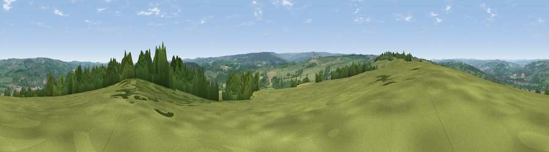

Viewpoint near Hexham
#15498 in England · top 37% of its area beats it · near Hexham · path 223 mWhere it is
The exact computed spot (NY 93775 62375). Click the marker for map links.
Public access: the nearest public right of way is about 223 m away — the final stretch may cross private land. Computed from Natural England's CRoW access layer and OpenStreetMap rights of way — not the legal definitive map. Always verify locally.
The view, rendered

A 360° render of this exact spot computed from the terrain model, tree cover and land cover — summer colours, afternoon light, calibrated against photographs of famous viewpoints. Real trees, hedges and buildings will differ in detail.
The panorama
Grey silhouette: terrain skyline in each direction (720 bearings, Earth curvature and refraction included). Dashed green: skyline with trees (+15 m) and buildings (+8 m) as obstacles. Blue strip: how far the ground is visible on each bearing.
Where the view opens
Wedge length = distance to the farthest visible ground on that bearing (vegetation-aware). Rings at 10, 25 and 50 km.
What fills the view
58% grassland · 28% woodland · 12% cropland · 2% built-up
Angular shares of the visible panorama (visual magnitude), not map area. Landscape diversity 0.44 (0–1 Shannon).
Key numbers
More beautiful places nearby
The staircase of upgrades: each row has a higher view potential than everything closer. Driving times are estimates from straight-line distance, calibrated against real road routing — check an actual route before setting out.
| Place | Direction | Drive | Score |
|---|---|---|---|
| Viewpoint near Hexham | W · 1 km | ~2 min | 59.0 |
| Viewpoint near Hexham | W · 2 km | ~5 min | 62.4 |
| Viewpoint near Oakwood | NNE · 5 km | ~12 min | 67.3 |
| Viewpoint near Fourstones | NNW · 6 km | ~14 min | 71.4 |
| Viewpoint near Hedley on the Hill | E · 16 km | ~29 min | 71.5 |
| Viewpoint near Greenside | E · 18 km | ~32 min | 74.2 |
| Viewpoint near Allenheads | SSW · 21 km | ~35 min | 74.6 |
| Pontop Pike | ESE · 23 km | ~38 min | 77.8 |
54.95598, -2.09874 · source: screening · position refined by local search. Computed location — check access rights before visiting.